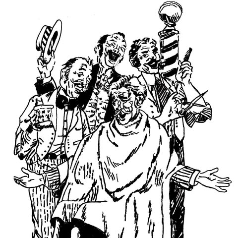
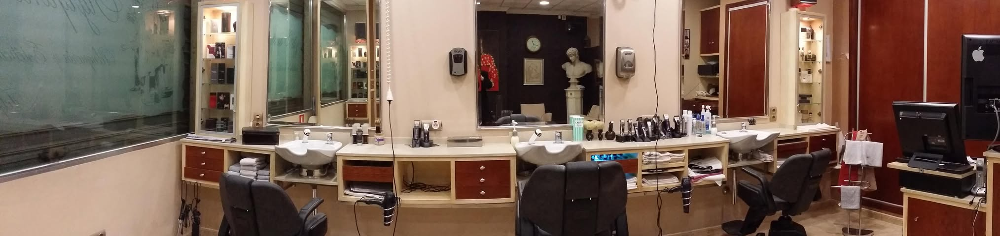

Corte de caballero
20 €
Un corte a la medida de cada caballero, clásico o actual, realizado a tijera o a máquina con el esmero del oficio y rematado con un discreto toque de colonia.
Para padres, hijos y abuelos. Un lugar tranquilo, con buena música y conversación amena, donde se le atiende con educación y respeto. Saldrá con un corte impecable y bien perfumado.

Un corte a la medida de cada caballero, clásico o actual, realizado a tijera o a máquina con el esmero del oficio y rematado con un discreto toque de colonia.
Nuestro servicio más exclusivo: corte de caballero y cuidado integral de la barba, arreglada y perfilada con precisión.
Un repaso cada dos semanas para que su corte luzca siempre como el primer día. Si lo desea, le reservamos su hora de forma permanente.
Para pedir cita escriba por WhatsApp o llame al 630 441 204.
Tres sillones, madera, espejos y la radio de fondo. Aquí nadie tiene prisa.

Deslice la foto con el dedo para ver todo el local.
Padres, hijos y abuelos comparten sillón y conversación. Cada uno recibe la atención que merece.
Le recibimos con cortesía, escuchamos cómo desea su corte y trabajamos sin prisas.
Un espacio acogedor para disfrutar de un momento solo para usted.
El oficio del barbero clásico, cuidado en cada detalle y rematado con un toque de colonia.
Nos desplazamos a su domicilio para atender a personas mayores que ya no pueden salir de casa y a personas con discapacidad, con la misma delicadeza y el mismo esmero que en nuestro salón.
Llámenos o escríbanos por WhatsApp y concertaremos el día y la hora que mejor le convengan.
Pensado para su padre, su abuelo o cualquier persona a la que le cueste salir de casa.
El niño que hoy se sienta por primera vez en el sillón es el nieto de alguien que lleva años confiando en nosotros. Así nos gusta: clientes de toda la vida que vuelven porque se sienten como en casa.
Pulse el botón ▶ para verlo. Puede subir el volumen.
Pulse sobre cada pregunta para ver la respuesta.
Estamos en la Calle Rafael Terol, 32, en el centro de Alicante (código postal 03001). Pulse el botón «Cómo llegar» y Google Maps le guía hasta la puerta.
De lunes a viernes, de 10:00 a 20:00. Los sábados, de 10:00 a 14:00. Los domingos está cerrado.
Lo más cómodo es escribirnos por WhatsApp con el botón «Reservar cita»: se abre con el mensaje ya escrito y solo tiene que enviarlo. También puede llamar al 630 441 204.
Le recomendamos pedir cita antes para atenderle con calma y sin esperas. Si pasa por la puerta, pregúntenos: si hay un hueco libre, le atendemos con mucho gusto.
El corte de caballero cuesta 20 €, sea clásico o actual. Precio cerrado, sin sorpresas.
Cuesta 40 € e incluye el servicio de máximo nivel: corte de caballero, tratamiento completo de barba, lavado, agua de avena, masaje, cera y perfumado.
Es un repaso del corte cada dos semanas para ir siempre bien arreglado. Cuesta 8 € cada vez y es ideal para quien quiere llevar el pelo y la nuca siempre perfectos.
Sí. Puede contratarlo de forma constante y le reservamos su hueco cada 15 días, así no tiene que acordarse de pedir cita.
Sí. Muchos niños se cortan aquí el pelo por primera vez acompañados de su padre o de su abuelo. Les atendemos con paciencia para que estén tranquilos.
Claro que sí, es lo que más nos gusta. Somos una peluquería familiar: pida cita para varios a la vez por WhatsApp y les organizamos los turnos seguidos.
Sí. Vamos a casa de las personas mayores que ya no pueden desplazarse y de las personas con discapacidad, con el mismo cuidado que en la peluquería.
Escríbanos por WhatsApp o llame al 630 441 204. Díganos dónde vive y qué día le viene mejor, y acordamos la visita. Puede pedirlo usted en su nombre.
Sí. Está pensado para personas mayores, personas en silla de ruedas, encamadas o con cualquier discapacidad que les impida venir. Consúltenos su caso sin compromiso.
Sí. Atendemos con educación, respeto y sin prisas. Muchos de nuestros clientes llevan años viniendo y se sienten como en casa.
Todo tipo de corte de caballero, del clásico de siempre al más moderno, a tijera o a máquina. Le preguntamos cómo lo quiere y le aconsejamos lo que mejor le va.
No se preocupe. Antes de empezar hablamos con usted, le preguntamos cómo suele llevarlo y lo vamos comprobando juntos en el espejo.
Sí, hacemos el tratamiento completo de barba: arreglo y perfilado. Junto con el corte de pelo, lavado, agua de avena, masaje, cera y perfumado, cuesta 40 €.
Tranquilo y acogedor, con música, buena conversación y un trato cercano. Es un rato para desconectar mientras le arreglan.
Tenemos una valoración de 4,8 sobre 5 en Google con más de 300 opiniones. Los clientes destacan el trato y el cuidado en cada detalle.
Porque aquí le conocen. Sabemos cómo le gusta el corte, atendemos igual al abuelo que al nieto y cuidamos que salga perfecto y bien perfumado cada vez.
Calle Rafael Terol, 32
03001 Alicante
| Lunes a viernes | 10:00 a 20:00 |
|---|---|
| Sábado | 10:00 a 14:00 |
| Domingo | Cerrado |
Calle Rafael Terol, 32
03001 Alicante